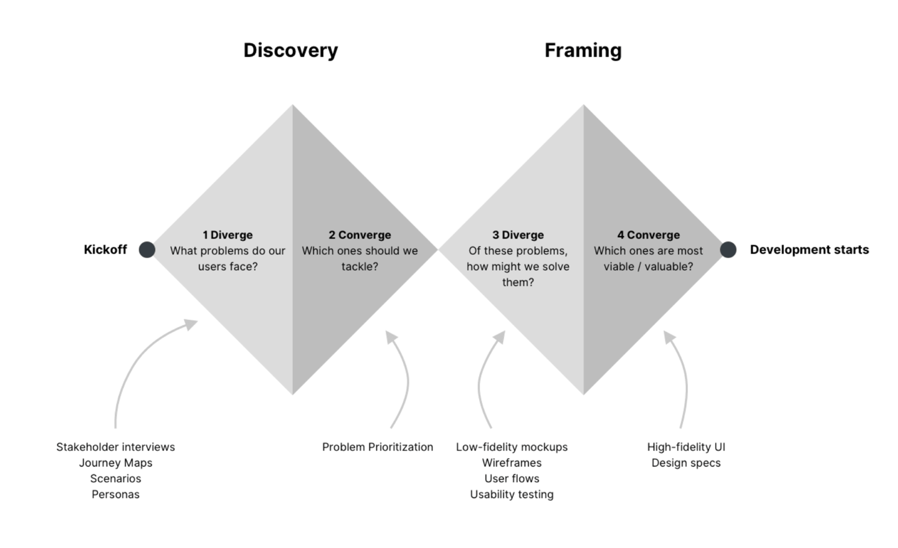
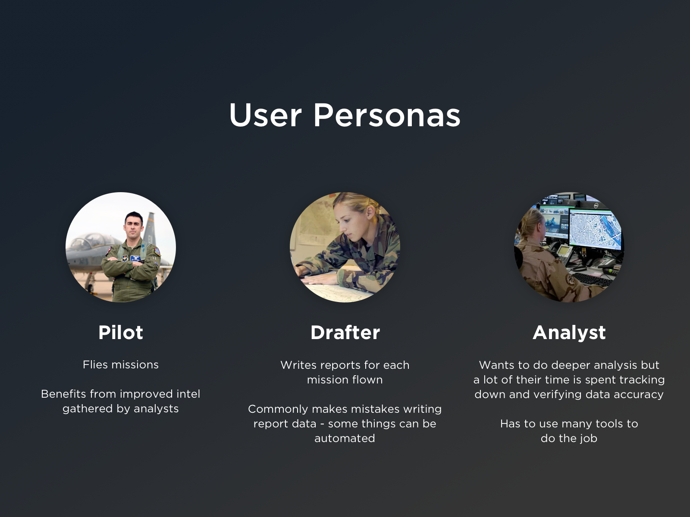
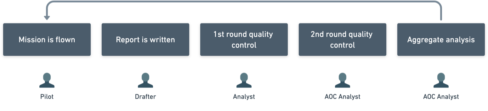
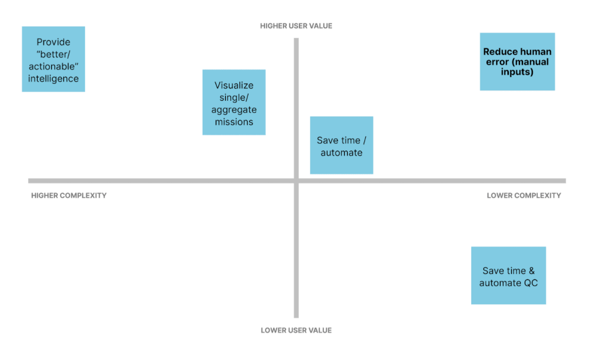
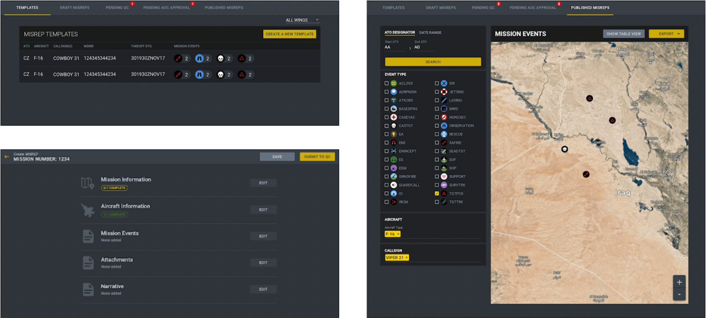
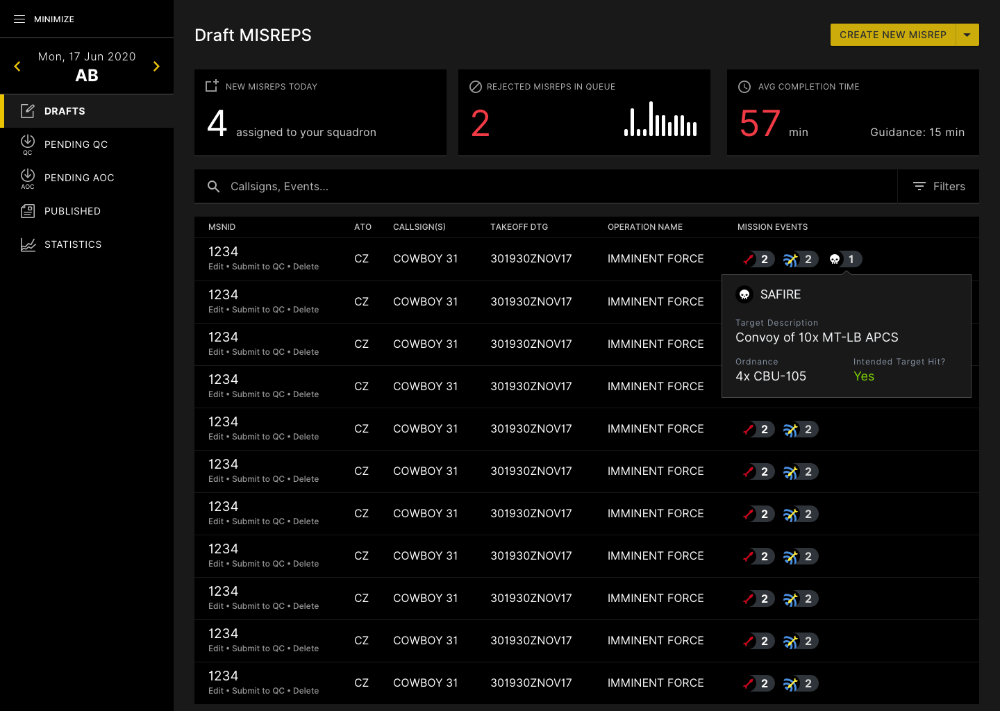
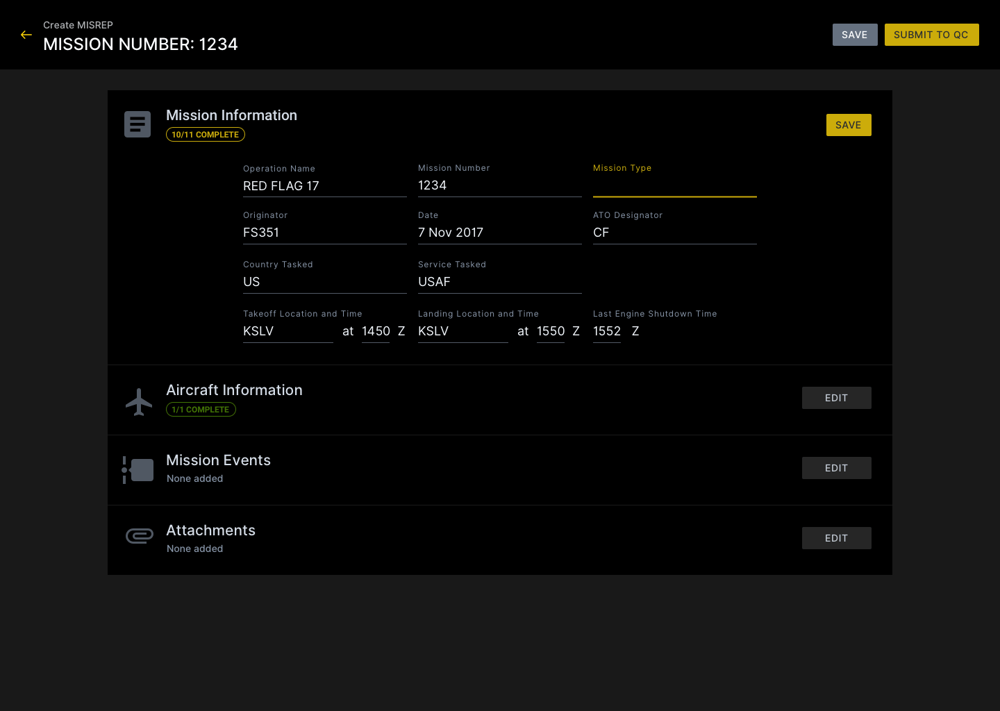
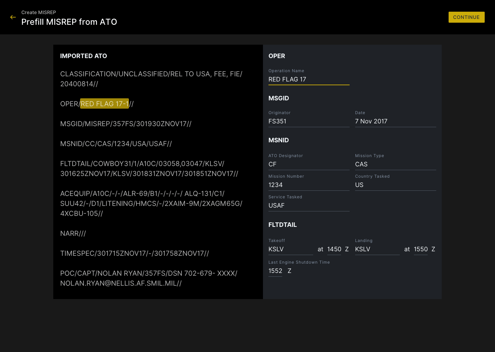
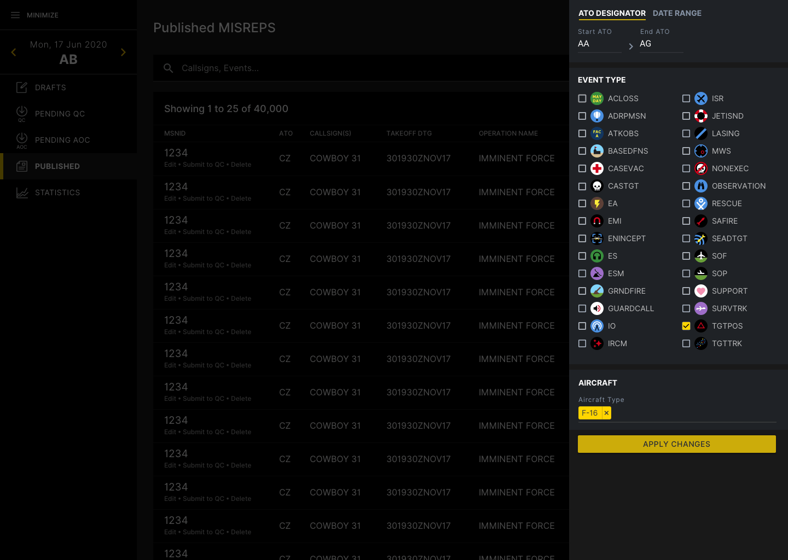
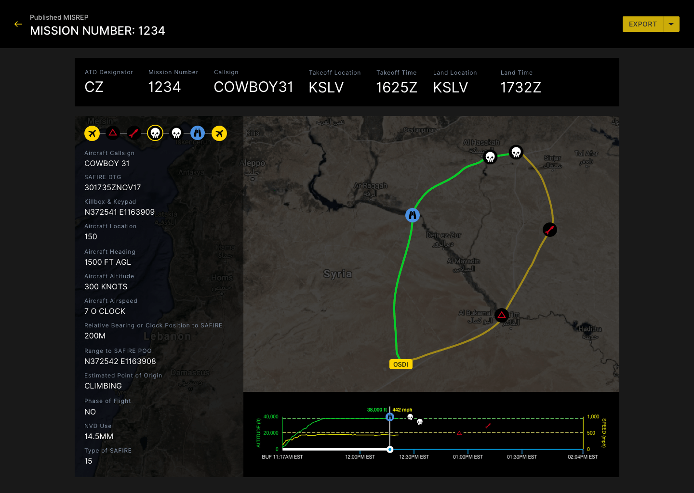

Mission Reporting Tool
I led the design of an app that improves the way the US Air Force reports and visualizes mission data.
Enterprise App Data Vis Lean UX Product Design
I led the design of an app that improves the way the US Air Force reports and visualizes mission data.
Enterprise App Data Vis Lean UX Product Design
I led the design of a tool allows US Air Force analysts to create reports 8 times faster and analyze reports geospatially. I advocated for user needs by conducting over 100 user interviews and our team achieved 100% user adoption across hundreds of users worldwide within a year of agile development. This project’s success led to increased funding from Congress.
Pivotal Labs is a consultancy that transforms the way enterprise organizations build products. Each project includes a balanced team of product managers, product designers, and engineers, each working as equal partners to create the best product possible. The number of engineering pairs grows as the product develops. This project kicked off with 2 engineers and grew to 18 engineers.
Each of these roles from the Pivotal side is paired with a counterpart from the client side. (Pivotal PM is paired with a client PM, Pivotal designer is paired with a client designer, Pivotal engineer is paired with a client engineer).
Product
Is this viable?
Engineering
Is this feasible?
Design
Is this desirable?
As the lead designer, my key objective was to lead the design process for the team and in doing so, train the client designer how to design products by pairing with them every day from 9:06 AM to 6 PM.
My project responsibilities included:
In 2017, the US Air Force wanted to modernize how software is built, so it created an internal organization named Kessel Run and brought in Pivotal Labs to teach and enable the Air Force how to build modern software.
While today Kessel Run employs nearly 300 product managers, designers, and engineers, when I was there, there were less than a dozen people.
Since it was small at the time, I worked directly with Kessel Run leadership and end users to lead the design of a key operational tool from the ground up.
Thousands of missions are flown every day, and during a flight, pilots note what they see. They may spot the development of a new building at a specific coordinate or even take note of a drone at a specific altitude and time.
Each of these missions gets a report written up. While some analysts used Microsoft Word to create the reports, others used a legacy tool to create these reports -- but the reports it generated were not human-friendly. Because of these inconsistencies, the Air Force wasn't able to effectively mine insights from the data.
The US Air Force wanted our team to explore the following problem:
This project was split into two phases: discovery and framing to identify the right users and problems, and iterative product development.
One key challenge on this project was that while Kessel Run had a clear vision of the end goal, they didn't know which users and stakeholders to begin with. There are nearly 60 Air Force bases worldwide, and each of them have slightly different leadership structures and standards on how to create reports.
After leading nearly 67 user and stakeholder interviews, our team narrowed down an initial list of high-level goals and identified a first set of users to target:
Consolidate reporting standards across Air Force bases
Deliver working software to users that can be used worldwide
Minimize software downtime (make it available offline)
Decrease the amount of time it takes to create a report
Improve the analysis workflow
Make the reports more readable
After reviewing the reporting structures across a few Air Force bases, I created 3 high-level personas.
After a mission is flown, a pilot relays what they observed to a drafter. The drafter takes the notes and writes up a report. Depending on the mission, this might take anywhere from 15 minutes to 3 hours. Once the report is finished, the drafter will send it to someone to review and quality control for spelling and coordinate errors. That report is then passed onto an analyst, who looks at a large number of reports to come up with tactical suggestions, which then informs the next set of missions a pilot might fly.
Below is an example of a Trello research template that I set up to help the team take notes during interviews.
Following the first set of interviews, I led the team in a research synthesis and pulled the following key insights:
It takes 15 min - 3 hours to create a report
The current reports don't allow for easy analysis
The error rate for reports was quite high, especially because there's a lot of manual entry of numbers
Since the reports aren't available worldwide, many Air Force bases don't have access to full intelligence
There are a number of ways we can save time by automating specific report fields
Given the right reporting structure, we can easily visualize specific types of missions
Since we needed to establish trust with our users and the larger Air Force leadership, the team needed to prove that we could ship something to production quickly. To narrow down the problem, we identified the smallest part in our users' workflow that we could tackle.
Using a 2x2 prioritization matrix, we landed on improving the report creation process, so that there would be a reduction in human error.
This image is a dummy, unclassified version of the type of report a drafter would create. Our MVP focused on improving just this small experience better. As one can tell, there are no form fields, so it's challenging to know what the data means. A complicating factor is that the reporting standards across the Air Force bases differed slightly, so analysts would have trouble automatically ingesting them without cleaning up the data.
The first design I created was a simple report builder. It introduced the quality control workflow and separated out the fields to make it easier to enter data and verify them later on.
This initial MVP was first tested at a training facility where the team could observe users interact with it and use it for test missions.
The next set of design iterations I introduced were to add more visual styling, create a centralized landing for reports, and add basic search capabilities.
I chose to go with a dark theme after considering the users' context -- they viewed screens all day in rooms with low lighting. The dark theme helps important content and icons stand out and conserve users' eyesight.
One big feature I researched and added was the addition of a map view. While interviewing users, we found that a number of them had a cumbersome workflow: they downloaded multiple geographic files, then used a tool to convert them to KMZ, then imported those files into Google Earth. By designing a map view in the product, this feature saves them multiple steps and allows them to centralize their data and have it up-to-date worldwide. Users were enthusiastic about this capability.
My initial MVP design had users write paragraphs of text detailing what happened in a mission. over time, I pushed the team to think about how we might improve how missions are reported and visualized.
Since a lot of the events included flight data, times, and coordinates, the logical step was to visualize that information over time. I designed the following screen when a user told me that it was important for them to understand where missions are played out in 3d space, not just points on a 2d map. Some analysts would look at the data and want to find insights such as: is it risky to fly at a certain altitude? This type of visualization helps the analysts pull those insights faster.
Some users also told us that they would read the reports and create Powerpoint decks trying to depict what happened. Using the flight data, we could automatically create those storyboards on their behalf, saving them several hours creating a deck.
With any product developed through an agile process, visual improvements are seldom prioritized on a feature backlog.
I found that the best way to introduce visual polish was by pairing directly with engineers and introducing the right changes in the context of the right feature.
This design includes a number of changes made over time: basic stats on report creation, search and filters to find the right report, improved navigation for each user persona, and high-level information about a draft report.
This design includes enhancements to writing a report. The original design was a single page with hundreds of fields. This design broke up the fields into logical categories. Sometimes drafters wouldn't finish a report in one sitting, so when they came back to it, they could easily tell which sections they needed to focus on.
The original MVP had basic information, such as the airplane type, takeoff location and time. That information was already available in an inaccessible API. This design automated that process and prefilled the reports, saving drafters 5-10 minutes and reducing the number of manual entry errors they might make.
These filters allow analysts to combine filters to find the right dataset to analyze. I also created the icons so that analysts could easily tell which type of mission events they were looking at on a map.
This design included changes to make the report easier to read.
© Kevin Chang, All Rights Reserved